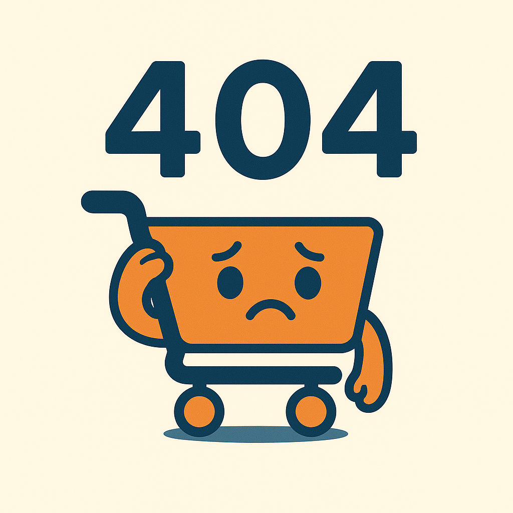

<ion-content>
  <div class="error-wrapper">
    
    <h1>¡Ups!</h1>
    <p>Parece que te perdiste en el pasillo.</p>
    
    <ion-button routerLink="/home" color="secondary" shape="round" expand="block">
      Volver al Inicio
    </ion-button>
  </div>
</ion-content>